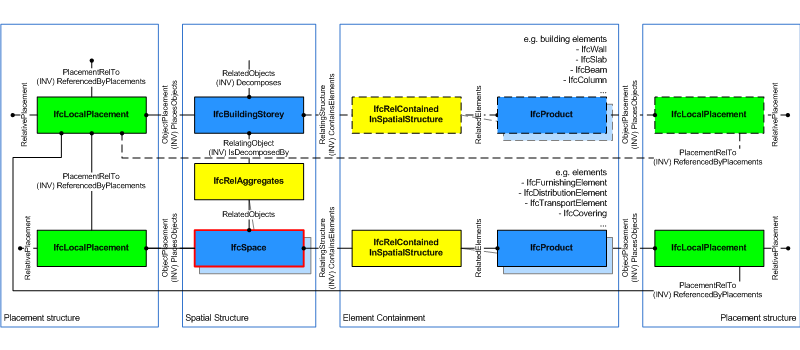
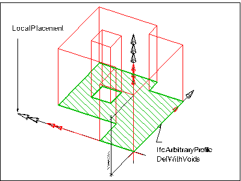

Natural language names
 | Raum |
 | Space |
 | Local |
| Raum |
| Space |
| Local |
| Item | SPF | XML | Change | Description | IFC2x3 to IFC4 |
|---|---|---|---|---|
| IfcSpace | ||||
| OwnerHistory | MODIFIED | Instantiation changed to OPTIONAL. | ||
| CompositionType | MODIFIED | Instantiation changed to OPTIONAL. | ||
| PredefinedType | MODIFIED | Name changed from InteriorOrExteriorSpace to PredefinedType. Type changed from IfcInternalOrExternalEnum to IfcSpaceTypeEnum. Instantiation changed to OPTIONAL. |
A space represents an area or volume bounded actually or theoretically. Spaces are areas or volumes that provide for certain functions within a building.
A space is associated to a building storey (or in case of exterior spaces to a site). A space may span over several connected spaces. Therefore a space group provides for a collection of spaces included in a storey. A space can also be decomposed in parts, where each part defines a partial space. This is defined by the CompositionType attribute of the supertype IfcSpatialStructureElement which is interpreted as follow:
NOTE View definitions and implementation agreements may restrict spaces with CompositionType=ELEMENT to be non-overlapping.
The IfcSpace is used to build the spatial structure of a building (that serves as the primary project breakdown and is required to be hierarchical). The spatial structure elements are linked together by using the objectified relationship IfcRelAggregates.
Figure 173 shows the IfcSpace as part of the spatial structure. It also serves as the spatial container for space related elements.
NOTE Detailed requirements on mandatory element containment and placement structure relationships are given in view definitions and implementer agreements.
 |
Figure 173 — Space composition |
The following guidelines should apply for using the Name, Description, LongName and ObjectType attributes.
NOTE In cases of inconsistency between the geometric representation of the IfcSpace and the combined geometric representations of the surrounding IfcRelSpaceBoundary, the geometric representation of the space should take priority over the geometric representation of the surrounding space boundaries.
Figure 174 describes the heights and elevations of the IfcSpace.
 |
Figure 174 — Space elevations |
HISTORY New entity in IFC1.0
| # | Attribute | Type | Cardinality | Description | C |
|---|---|---|---|---|---|
| 10 | PredefinedType | IfcSpaceTypeEnum | [0:1] |
Predefined generic types for a space that are specified in an enumeration. There might be property sets defined specifically for each predefined type.
NOTE Previous use had been to indicates whether the IfcSpace is an interior space by value INTERNAL, or an exterior space by value EXTERNAL. This use is now deprecated, the property 'IsExternal' at 'Pset_SpaceCommon' should be used instead. | X |
| 11 | ElevationWithFlooring | IfcLengthMeasure | [0:1] | Level of flooring of this space; the average shall be taken, if the space ground surface is sloping or if there are level differences within this space. | X |
| HasCoverings | IfcRelCoversSpaces @RelatingSpace | S[0:?] | Reference to IfcCovering by virtue of the objectified relationship IfcRelCoversSpaces. It defines the concept of a space having coverings assigned. Those coverings may represent different flooring, or tiling areas.
NOTE Coverings are often managed by the space, and not by the building element, which they cover. | X | |
| BoundedBy | IfcRelSpaceBoundary @RelatingSpace | S[0:?] | Reference to a set of IfcRelSpaceBoundary's that defines the physical or virtual delimitation of that space against physical or virtual boundaries. | X |
| Rule | Description |
|---|---|
| CorrectPredefinedType | Either the PredefinedType attribute is unset (e.g. because an IfcSpaceType is associated), or the inherited attribute ObjectType shall be provided, if the PredefinedType is set to USERDEFINED. |
| CorrectTypeAssigned | Either there is no space type object associated, i.e. the IsTypedBy inverse relationship is not provided, or the associated type object has to be of type IfcSpaceType. |

| # | Attribute | Type | Cardinality | Description | C |
|---|---|---|---|---|---|
| IfcRoot | |||||
| 1 | GlobalId | IfcGloballyUniqueId | [1:1] | Assignment of a globally unique identifier within the entire software world. | X |
| 2 | OwnerHistory | IfcOwnerHistory | [0:1] |
Assignment of the information about the current ownership of that object, including owning actor, application, local identification and information captured about the recent changes of the object,
NOTE only the last modification in stored - either as addition, deletion or modification. | X |
| 3 | Name | IfcLabel | [0:1] | Optional name for use by the participating software systems or users. For some subtypes of IfcRoot the insertion of the Name attribute may be required. This would be enforced by a where rule. | X |
| 4 | Description | IfcText | [0:1] | Optional description, provided for exchanging informative comments. | X |
| IfcObjectDefinition | |||||
| HasAssignments | IfcRelAssigns @RelatedObjects | S[0:?] | Reference to the relationship objects, that assign (by an association relationship) other subtypes of IfcObject to this object instance. Examples are the association to products, processes, controls, resources or groups. | X | |
| Nests | IfcRelNests @RelatedObjects | S[0:1] | References to the decomposition relationship being a nesting. It determines that this object definition is a part within an ordered whole/part decomposition relationship. An object occurrence or type can only be part of a single decomposition (to allow hierarchical strutures only). | X | |
| IsNestedBy | IfcRelNests @RelatingObject | S[0:?] | References to the decomposition relationship being a nesting. It determines that this object definition is the whole within an ordered whole/part decomposition relationship. An object or object type can be nested by several other objects (occurrences or types). | X | |
| HasContext | IfcRelDeclares @RelatedDefinitions | S[0:1] | References to the context providing context information such as project unit or representation context. It should only be asserted for the uppermost non-spatial object. | X | |
| IsDecomposedBy | IfcRelAggregates @RelatingObject | S[0:?] | References to the decomposition relationship being an aggregation. It determines that this object definition is whole within an unordered whole/part decomposition relationship. An object definitions can be aggregated by several other objects (occurrences or parts). | X | |
| Decomposes | IfcRelAggregates @RelatedObjects | S[0:1] | References to the decomposition relationship being an aggregation. It determines that this object definition is a part within an unordered whole/part decomposition relationship. An object definitions can only be part of a single decomposition (to allow hierarchical strutures only). | X | |
| HasAssociations | IfcRelAssociates @RelatedObjects | S[0:?] | Reference to the relationship objects, that associates external references or other resource definitions to the object.. Examples are the association to library, documentation or classification. | X | |
| IfcObject | |||||
| 5 | ObjectType | IfcLabel | [0:1] |
The type denotes a particular type that indicates the object further. The use has to be established at the level of instantiable subtypes. In particular it holds the user defined type, if the enumeration of the attribute PredefinedType is set to USERDEFINED.
| X |
| IsDeclaredBy | IfcRelDefinesByObject @RelatedObjects | S[0:1] | Link to the relationship object pointing to the declaring object that provides the object definitions for this object occurrence. The declaring object has to be part of an object type decomposition. The associated IfcObject, or its subtypes, contains the specific information (as part of a type, or style, definition), that is common to all reflected instances of the declaring IfcObject, or its subtypes. | X | |
| Declares | IfcRelDefinesByObject @RelatingObject | S[0:?] | Link to the relationship object pointing to the reflected object(s) that receives the object definitions. The reflected object has to be part of an object occurrence decomposition. The associated IfcObject, or its subtypes, provides the specific information (as part of a type, or style, definition), that is common to all reflected instances of the declaring IfcObject, or its subtypes. | X | |
| IsTypedBy | IfcRelDefinesByType @RelatedObjects | S[0:1] | Set of relationships to the object type that provides the type definitions for this object occurrence. The then associated IfcTypeObject, or its subtypes, contains the specific information (or type, or style), that is common to all instances of IfcObject, or its subtypes, referring to the same type. | X | |
| IsDefinedBy | IfcRelDefinesByProperties @RelatedObjects | S[0:?] | Set of relationships to property set definitions attached to this object. Those statically or dynamically defined properties contain alphanumeric information content that further defines the object. | X | |
| IfcProduct | |||||
| 6 | ObjectPlacement | IfcObjectPlacement | [0:1] | Placement of the product in space, the placement can either be absolute (relative to the world coordinate system), relative (relative to the object placement of another product), or constraint (e.g. relative to grid axes). It is determined by the various subtypes of IfcObjectPlacement, which includes the axis placement information to determine the transformation for the object coordinate system. | X |
| 7 | Representation | IfcProductRepresentation | [0:1] | Reference to the representations of the product, being either a representation (IfcProductRepresentation) or as a special case a shape representations (IfcProductDefinitionShape). The product definition shape provides for multiple geometric representations of the shape property of the object within the same object coordinate system, defined by the object placement. | X |
| ReferencedBy | IfcRelAssignsToProduct @RelatingProduct | S[0:?] | Reference to the IfcRelAssignsToProduct relationship, by which other products, processes, controls, resources or actors (as subtypes of IfcObjectDefinition) can be related to this product. | X | |
| IfcSpatialElement | |||||
| 8 | LongName | IfcLabel | [0:1] |
Long name for a spatial structure element, used for informal purposes. It should be used, if available, in conjunction with the inherited Name attribute.
NOTE In many scenarios the Name attribute refers to the short name or number of a spacial element, and the LongName refers to the full descriptive name. | X |
| ContainsElements | IfcRelContainedInSpatialStructure @RelatingStructure | S[0:?] | Set of spatial containment relationships, that holds those elements, which are contained within this element of the project spatial structure.
NOTE The spatial containment relationship, established by IfcRelContainedInSpatialStructure, is required to be an hierarchical relationship, where each element can only be assigned to 0 or 1 spatial structure element. | X | |
| ServicedBySystems | IfcRelServicesBuildings @RelatedBuildings | S[0:?] | Set of relationships to systems, that provides a certain service to the spatial element for which it is defined. The relationship is handled by the objectified relationship IfcRelServicesBuildings. | X | |
| ReferencesElements | IfcRelReferencedInSpatialStructure @RelatingStructure | S[0:?] | Set of spatial reference relationships, that holds those elements, which are referenced, but not contained, within this element of the project spatial structure.
NOTE The spatial reference relationship, established by IfcRelReferencedInSpatialStructure, is not required to be an hierarchical relationship, i.e. each element can be assigned to 0, 1 or many spatial structure elements. EXAMPLE A curtain wall maybe contained in the ground floor, but maybe referenced in all floors, it reaches. Ø\X | X | |
| IfcSpatialStructureElement | |||||
| 9 | CompositionType | IfcElementCompositionEnum | [0:1] | Denotes, whether the predefined spatial structure element represents itself, or an aggregate (complex) or a part (part). The interpretation is given separately for each subtype of spatial structure element. If no CompositionType is asserted, the dafault value 'ELEMENT' applies. | X |
| IfcSpace | |||||
| 10 | PredefinedType | IfcSpaceTypeEnum | [0:1] |
Predefined generic types for a space that are specified in an enumeration. There might be property sets defined specifically for each predefined type.
NOTE Previous use had been to indicates whether the IfcSpace is an interior space by value INTERNAL, or an exterior space by value EXTERNAL. This use is now deprecated, the property 'IsExternal' at 'Pset_SpaceCommon' should be used instead. | X |
| 11 | ElevationWithFlooring | IfcLengthMeasure | [0:1] | Level of flooring of this space; the average shall be taken, if the space ground surface is sloping or if there are level differences within this space. | X |
| HasCoverings | IfcRelCoversSpaces @RelatingSpace | S[0:?] | Reference to IfcCovering by virtue of the objectified relationship IfcRelCoversSpaces. It defines the concept of a space having coverings assigned. Those coverings may represent different flooring, or tiling areas.
NOTE Coverings are often managed by the space, and not by the building element, which they cover. | X | |
| BoundedBy | IfcRelSpaceBoundary @RelatingSpace | S[0:?] | Reference to a set of IfcRelSpaceBoundary's that defines the physical or virtual delimitation of that space against physical or virtual boundaries. | X | |
Spatial Composition
The Spatial Composition concept applies to this entity.
By using the inverse relationship IfcSpace.IsDecomposedBy it references IfcSpace by IfcRelAggregates.RelatedObjects. If it refers to another instance of IfcSpace, the referenced IfcSpace needs to have a different and lower CompositionType, i.e. ELEMENT (if the other IfcSpace has COMPLEX), or PARTIAL (if the other IfcSpace has ELEMENT).
Spatial Decomposition
The Spatial Decomposition concept applies to this entity.
By using the inverse relationship IfcSpace.Decomposes it references IfcSite || IfcBuildingStorey || IfcSpace by IfcRelAggregates.RelatingObject. If it refers to another instance of IfcSpace, the referenced IfcSpace needs to have a different and higher CompositionType, i.e. COMPLEX (if the other IfcSpace has ELEMENT), or ELEMENT (if the other IfcSpace has PARTIAL).
Spatial Container
The Spatial Container concept applies to this entity.
If there are building elements and/or other elements directly related to the IfcSpace (like most furniture and distribution elements), they are associated with the IfcSpace by using the objectified relationship IfcRelContainedInSpatialStructure. The IfcSpace references them by its inverse relationship:
Property Sets for Objects
The Property Sets for Objects concept applies to this entity as shown in Table 69.
| |||||||||||||||||||||||||||||||||||||||||||||||||||||||||||||||||||||||||||||||||||||||||||||||||||||||||||||||||||||||||||||||||||||||||||||||||||||||||||||||||||||||||||||||||||||||||||||||||||||||||||||||||||||||||||||||||||||||||||||||||||||||||||||||||||||||||||||||||||||||||||||||||||||||||||||||||||||||||||||||||||||||||
Table 69 — IfcSpace Property Sets for Objects |
Quantity Sets
The Quantity Sets concept applies to this entity as shown in Table 70.
| ||
Table 70 — IfcSpace Quantity Sets |
Space Boundaries 1st Level
The Space Boundaries 1st Level concept applies to this entity.
Product Local Placement
The Product Local Placement concept applies to this entity.
The local placement for IfcSpace is defined at its supertype IfcProduct. It is defined by the IfcLocalPlacement, which defines the local coordinate system that is referenced by all geometric representations.
FootPrint GeomSet Geometry
The FootPrint GeomSet Geometry concept applies to this entity as shown in Table 71.
| ||||||||||||
Table 71 — IfcSpace FootPrint GeomSet Geometry |
The following constraints apply to the 2D representation:
 |
EXAMPLE Figure 174 shows a two-dimensional bounded curve representing the foot print of IfcSpace. |
Figure 174 — Space footprint |
Body SweptSolid Geometry
The Body SweptSolid Geometry concept applies to this entity.
The following constraints apply to the standard representation:
Figure 175 shows an extrusion of an arbitrary profile definition with voids into the swept area solid of IfcSpace.
 |
Figure 175 — Space body swept solid |
Body Clipping Geometry
The Body Clipping Geometry concept applies to this entity.
The following additional constraints apply to the advanced representation:
Figure 176 shows an extrusion of an arbitrary profile definition into the swept area solid. The solid and an half space solid are operands of the Boolean result of IfcSpace.
 |
Figure 176 — Space body clipping |
Body Brep Geometry
The Body Brep Geometry concept applies to this entity.
The space can be represented by a brep geometry representation
| # | Concept | Model View |
|---|---|---|
| IfcRoot | ||
| Software Identity | Common Use Definitions | |
| Revision Control | Common Use Definitions | |
| IfcObject | ||
| Object Occurrence Predefined Type | Common Use Definitions | |
| IfcSpatialElement | ||
| IfcSpatialStructureElement | ||
| IfcSpace | ||
| Spatial Composition | Common Use Definitions | |
| Spatial Decomposition | Common Use Definitions | |
| Spatial Container | Common Use Definitions | |
| Property Sets for Objects | Common Use Definitions | |
| Quantity Sets | Common Use Definitions | |
| Space Boundaries 1st Level | Common Use Definitions | |
| Product Local Placement | Common Use Definitions | |
| FootPrint GeomSet Geometry | Common Use Definitions | |
| Body SweptSolid Geometry | Common Use Definitions | |
| Body Clipping Geometry | Common Use Definitions | |
| Body Brep Geometry | Common Use Definitions | |
<xs:element name="IfcSpace" type="ifc:IfcSpace" substitutionGroup="ifc:IfcSpatialStructureElement" nillable="true"/>
<xs:complexType name="IfcSpace">
<xs:complexContent>
<xs:extension base="ifc:IfcSpatialStructureElement">
<xs:attribute name="PredefinedType" type="ifc:IfcSpaceTypeEnum" use="optional"/>
<xs:attribute name="ElevationWithFlooring" type="ifc:IfcLengthMeasure" use="optional"/>
</xs:extension>
</xs:complexContent>
</xs:complexType>
ENTITY IfcSpace
SUBTYPE OF (IfcSpatialStructureElement);
PredefinedType : OPTIONAL IfcSpaceTypeEnum;
ElevationWithFlooring : OPTIONAL IfcLengthMeasure;
INVERSE
HasCoverings : SET OF IfcRelCoversSpaces FOR RelatingSpace;
BoundedBy : SET OF IfcRelSpaceBoundary FOR RelatingSpace;
WHERE
CorrectPredefinedType : NOT(EXISTS(PredefinedType)) OR
(PredefinedType <> IfcSpaceTypeEnum.USERDEFINED) OR
((PredefinedType = IfcSpaceTypeEnum.USERDEFINED) AND EXISTS (SELF\IfcObject.ObjectType));
CorrectTypeAssigned : (SIZEOF(IsTypedBy) = 0) OR
('IFCPRODUCTEXTENSION.IFCSPACETYPE' IN TYPEOF(SELF\IfcObject.IsTypedBy[1].RelatingType));
END_ENTITY;
 Instance diagram
Instance diagram Link to this page
Link to this page